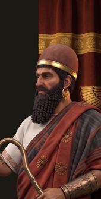
Хетты
Суппилулиума I · Великий царь
Держава бронзового века в сердце Анатолии: тяжёлые колесницы, сеть вассальных договоров и «тысяча богов страны Хатти».
Древний мир от Британии до Персиды на одной исторической карте для Civilization VII. Одна эпоха и очень долгая партия: пятнадцать новых держав, восемь наций игры, античные народы на своих местах, настоящие горы, реки и проливы.
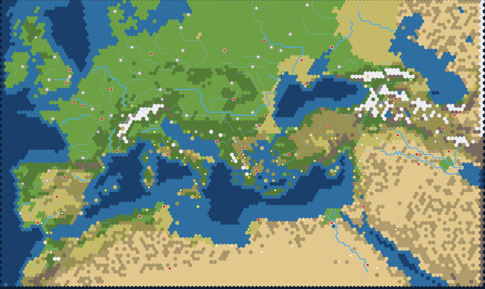
Рельеф по реальным высотам, реки с античными именами, хребты с проходимыми перевалами и около двухсот названий областей и морей в подсказке клетки. Два варианта: «все лидеры» и «только античные».
Каждая нация — отдельный мод: своя способность, уникальный юнит, ветка культуры, лидер с портретом и реплики в дипломатии. Работают и на карте Mare Nostrum, и на любой другой.

Суппилулиума I · Великий царь
Держава бронзового века в сердце Анатолии: тяжёлые колесницы, сеть вассальных договоров и «тысяча богов страны Хатти».
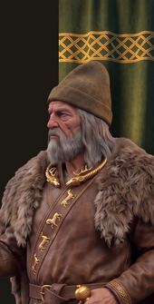
Атей · Царь всех скифов
Кочевники Великой степи от Дуная до Дона: конные лучники, золото курганов и звериный стиль.
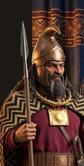
Ситалк · Союз племён
Горы и равнины между Дунаем и Эгейским морем. Золото Пангея, пельтасты и конница одрисов, что держит в страхе греческие города побережья.
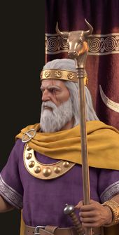
Аргантоний · Царь-долгожитель
Серебряный край на западном конце моря. Тартесс и турдетаны: рудники, гавани за Столпами и воины с фалькатой.
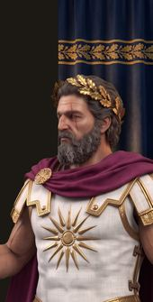
Филипп II · Царь и дипломат
Горное царство на севере Эллады, где фаланга с сариссами и конница гетайров покорили Грецию и дошли до Инда.
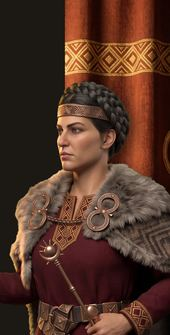
Теута · Царица Адриатики
Горные племена и морские разбойники восточного берега Адриатики: царство Ардиеев с лёгкими лембами и каменными городищами.
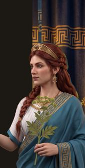
Береника II · Царица Кирены
Греческий Пентаполь на африканском берегу. Сильфий, кони и философы между Египтом и Карфагеном.
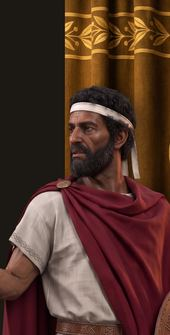
Массинисса · Царь Нумидии
Царство лёгкой конницы между Карфагеном и пустыней: нумидийские всадники решали исходы битв от Сицилии до Испании.
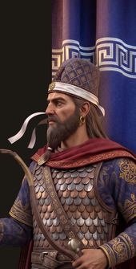
Митридат I Великий · Царь царей
Держава Аршакидов от Евфрата до Окса: тяжёлые катафракты, конные лучники и Шёлковый путь.
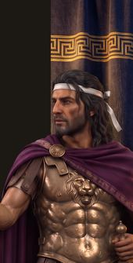
Митридат VI Евпатор · Враг Рима
Эллинистическое царство на южном берегу Чёрного моря, наследник персидской знати и греческих городов. Флот, железо и последний великий вызов Риму.
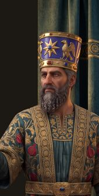
Тигран II Великий · Царь царей
Нагорье между тремя морями. Армянская тяжёлая конница, караваны Артаксаты и титул царя царей.
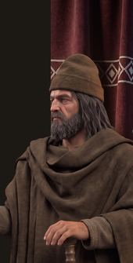
Децебал · Царь Дакии
Горное царство в Карпатах: крепости на вершинах, золото рудников, жрецы Залмоксиса и двуручный серп, пробивавший римские шлемы.
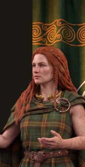
Боудикка · Царица иценов
Кельтские племена Британии: боевые колесницы, друиды, городища на холмах и олово Корнуолла, которое знал весь Средиземноморский мир.
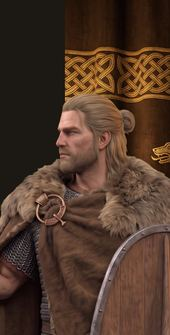
Арминий · Освободитель Германии
Свободные племена за Рейном: херуски, хатты и бруктеры. Тинг, дружина и лес, в котором погибли легионы Вара.
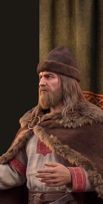
Самослав · Король вендов
Лесные реки Восточной Европы. Склавины, анты и венеды: поселения растут быстро, а воины исчезают в чаще и бьют из засады.
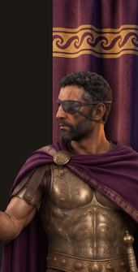
Карфаген · Клятва Гамилькара
Полководец Карфагена, перешедший Альпы со слонами. Сильная армия наёмников и великий генерал, который сам приходит к вам по ветке культуры Карфагена.
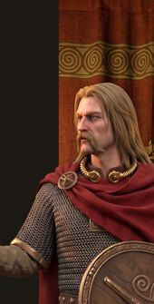
Галлы · Вождь всех галлов
Вождь арвернов, объединивший племена Галлии против Цезаря. Оборона на холмах и в лесах, сила от союзных городов-государств.
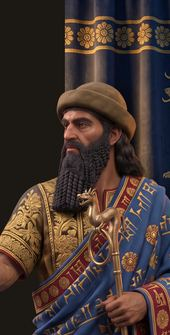
Вавилон · Царь справедливости
Царь Вавилона, объединивший Двуречье договорами и войнами и давший ему законы, высеченные в камне. Законодатель и строитель каналов.
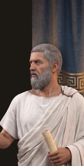
Греция · Философ-царь
Афинский философ, ученик Сократа и основатель Академии. Он описал идеальное государство, которым должны править мудрецы.
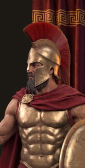
Греция, Спарта · Фермопилы
Царь Спарты, который с тремя сотнями спартанцев и союзниками держал Фермопильский проход против войска Ксеркса.
mare-nostrum-mapкарта «Mare Nostrum: Древний мир»: «все лидеры» и «только античные»; работает сама по себеmn-sea-rulesморская система: галеры у берега, «Дальние плавания» и «Периплы», штормы, флотоводцыmn-events22 случайных события Древности с выбором решенияmn-difficultyсложность: старт, стены, доход, агрессия, войны, штурм, дипломатия ИИ — подробноmn-shipsуникальные корабли морских наций и морской бонус Карфагенаmn-warfareобоз, истощение в дальних походах, дешёвые командирыmn-mercenariesпо два уникальных юнита у каждого типа городов-государств для сюзеренаmn-unitsвторой уникальный юнит у 13 наций: гетайры, конные лучники, слоны, пельтасты…mn-ancient-leadersна экране выбора только лидеры Древности (по желанию)mn-sandboxпесочница: ИИ играет за вас N ходов, открыть карту, бесплатные технологииmn-civ-*15 наций: хетты, скифы, Фракия, Иберия, Македония, иллирийцы, Киренаика, Нумидия, Парфия, Понт, Армения, даки, бритты, германцы, ранние славянеmn-leader-hannibalГаннибал Барка для Карфагенаmn-leader-vercingetorixВерцингеториг для Галлииmn-leader-hammurabiХаммурапи для Вавилонаmn-leader-platoПлатон для Грецииmn-leader-leonidasЛеонид I для Греции (Спарта)Какие нации сосуществовали и кого не стоит сводить в одной партии — в хронике античности.
Удалите из папки модов все старые папки Mare Nostrum: две версии одного мода ломают загрузку.
Скопируйте содержимое папки «Mare Nostrum 2.20.3» из архива в ~/Library/Application Support/Civilization VII/Mods/. На Windows: %LOCALAPPDATA%\Firaxis Games\Sid Meier's Civilization VII\Mods\
В игре откройте «Дополнения» и включите нужные моды.
Новая игра → Древний мир → карта «Mare Nostrum: Древний мир».